Simulado 1
No meio do caminho
Para medir onde você está e ajustar o estudo antes do edital.
30 dias após a compra

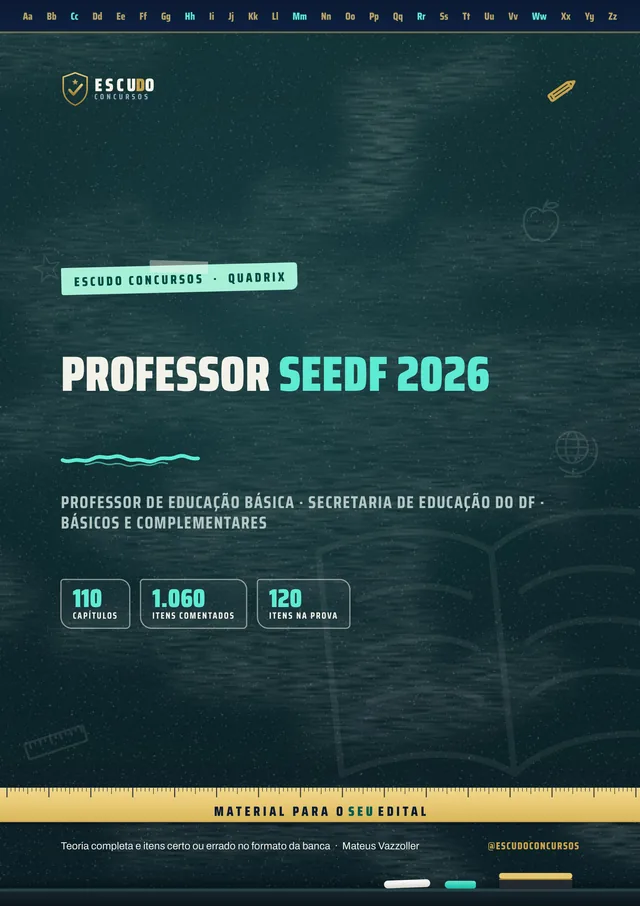
1.060itens
comentados
A Secretaria de Educação do DF vai abrir concurso com 1.879 vagas imediatas e 5.638 de cadastro de reserva para Professor de Educação Básica, e o edital ainda não saiu. Quem começa agora chega na frente. Curso feito sobre o Termo de Referência 3/2026 e o último edital do cargo (Edital nº 31/2022, Instituto Quadrix), com a parte comum a todas as áreas, itens Certo ou Errado e gabarito comentado.
Pré-edital: baseado no último edital (nº 31/2022, Quadrix). Atualizado quando sair o novo
de R$ 47 por 21% OFF
R$37
com o cupom SEEDF37 até 31/12/2026. Pelo botão, o cupom já vai preenchido.
R$47
Curso completo, com acesso imediato.
O concurso
A Secretaria de Estado de Educação do Distrito Federal (SEEDF) vai abrir concurso para Professor de Educação Básica, com 1.879 vagas imediatas e 5.638 de cadastro de reserva em 57 componentes curriculares, segundo o Termo de Referência 3/2026. A carreira é o Magistério Público, com jornada de 40 horas e vencimento básico de R$ 6.749,10 (padrão 1). O Instituto Quadrix foi ratificado como banca no DODF de 15/10/2026, e a previsão oficial do edital é dezembro de 2026.
O edital ainda não foi publicado, então o curso segue o Termo de Referência e o último edital do cargo, o Edital SEE/DF nº 31/2022 (Quadrix). O Termo prevê prova objetiva de 120 itens Certo ou Errado, com penalização por erro: um item errado anula um certo. São 30 itens de Conhecimentos Básicos, 40 de Complementares e 50 de Específicos. Em 2022 a ordem era 40, 30 e 50: os Complementares subiram.
Por lei distrital, toda prova deve cobrar a realidade do DF e da RIDE, a Lei Orgânica do DF e a LC 840/2011, o Plano Distrital de Política para Mulheres, noções de primeiros socorros e, no mínimo, 3 itens da Lei Maria da Penha. Depois da objetiva vêm a discursiva (dissertação de até 30 linhas, de 0 a 40 pontos) e o Estudo de Caso (de 0 a 40 pontos), cada uma com mínimo de 20.
Este curso cobre os Básicos e os Complementares, comuns a todas as áreas, que somam 70 dos 120 itens. Os 50 itens Específicos mudam de área para área (são 57 programas); para Pedagogia, o maior componente, existe um curso à parte.
| Bloco | Conteúdo | Itens |
|---|---|---|
| Básicos | Língua Portuguesa, tecnologia na educação, Direito Administrativo, LC 840/2011 e Distrito Federal e RIDE (neste curso) | 30 |
| Complementares | Legislação educacional, normas do DF e temas pedagógicos (neste curso) | 40 |
| Específicos | Programa de cada área, 57 componentes (fora deste curso; Pedagogia tem curso à parte) | 50 |
| Prova objetiva de 120 itens. Mínimos do edital de 2022, só como referência: 10 pontos nos básicos, 8 nos complementares, 12 nos específicos e 34 no total. O edital novo pode mudar. | 120 |
O formato
Você estuda lendo, no seu ritmo, pela área de membros da Hotmart ou com os arquivos baixados. O curso segue o Termo de Referência 3/2026 e o último edital do cargo (Edital nº 31/2022, Quadrix), item por item do programa, com a legislação conferida no texto vigente em 07/11/2026. Quando o edital novo sair, vale o que ele disser: o programa será conferido e o curso, ajustado.
Quem é de Pedagogia leva os dois: o curso Professor Pedagogia SEEDF traz os Conhecimentos Específicos da área, e este traz os Básicos e os Complementares.
Páginas reais do PDF
Toque numa página para ver em tamanho maior.
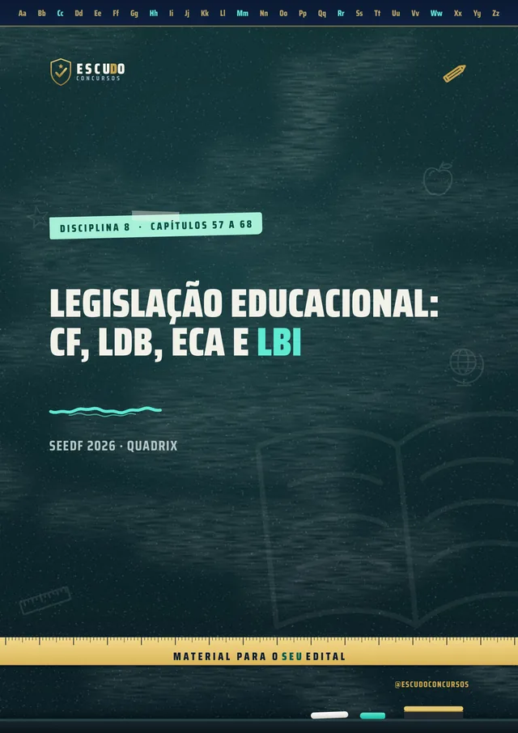
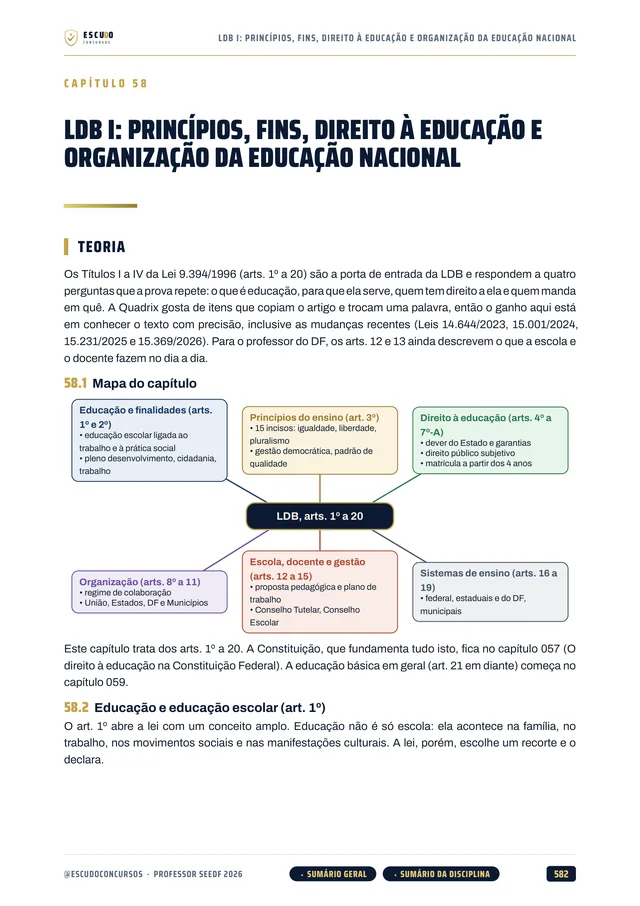
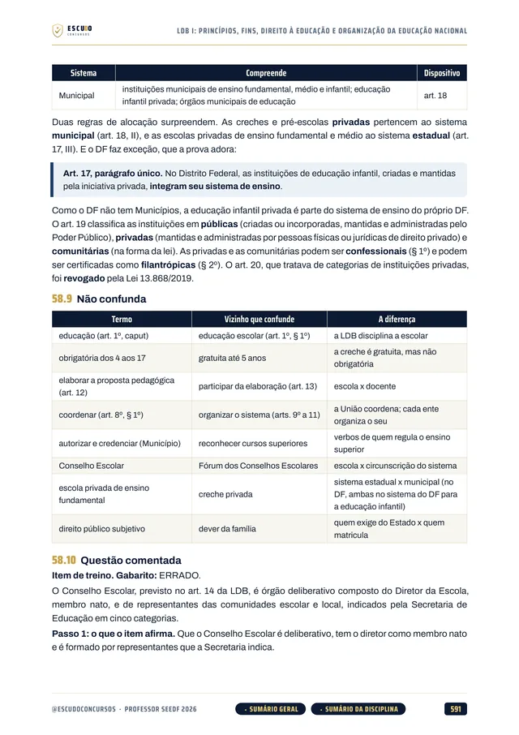
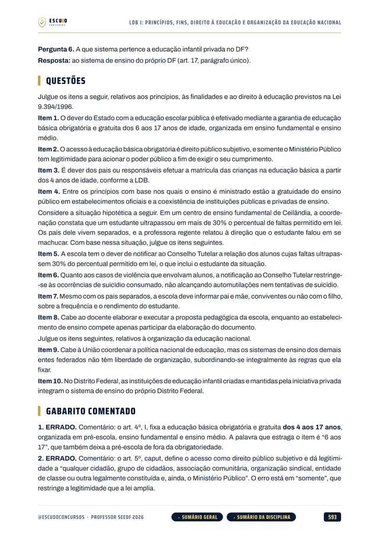
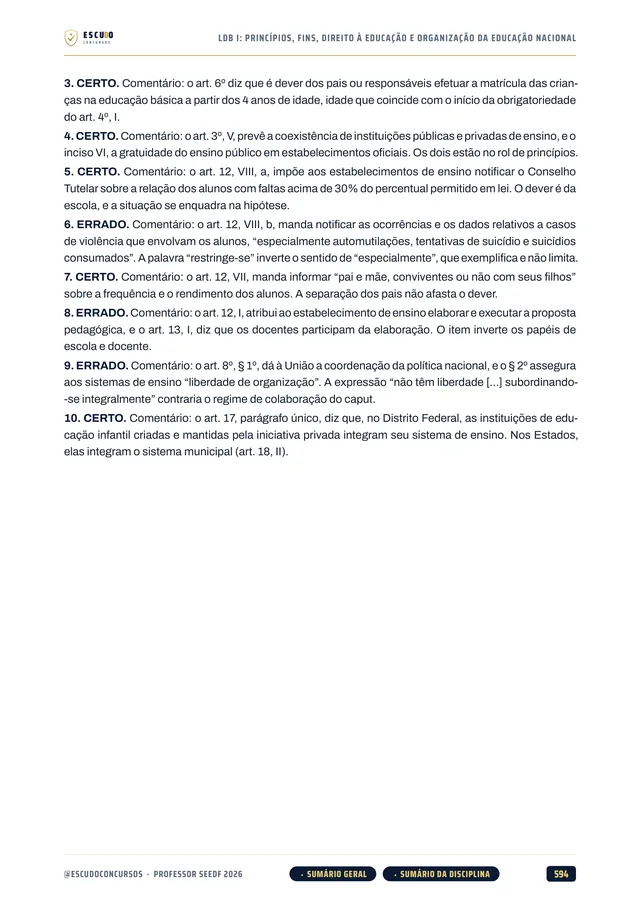
100% em PDF · Garantia de 7 dias · Pagamento pela Hotmart
Leia uma amostra grátis: a apresentação e 10 questões comentadas
O que você recebe
Curso em PDF organizado em 16 módulos, um por disciplina, com 1.146 páginas no padrão visual ESCUDO, para ler no computador, no tablet, no celular ou no app da Hotmart. Não há videoaulas.
110 capítulos cobrindo os Conhecimentos Básicos e os Complementares, comuns a todas as áreas: Língua Portuguesa (21), Informática e Tecnologia na Educação (11), Direito Administrativo (8), LC 840/2011 (4), Distrito Federal e RIDE (6), Lei Maria da Penha (3), Primeiros Socorros (2), Legislação Educacional (29), Conhecimentos Pedagógicos (22) e Discursiva e Estudo de Caso (3).
1.060 itens inéditos no estilo Certo ou Errado da Quadrix, todos com gabarito comentado: o dispositivo que decide e, no item errado, a palavra que o derruba.
Legislação Educacional em 29 capítulos: Constituição Federal, LDB com a Lei 14.945/2024, ECA, Lei Brasileira de Inclusão, Diretrizes Curriculares Nacionais, Reforma do Ensino Médio, EJA e as normas do DF (LODF, Resolução 2/2023-CEDF, Regimento Escolar, PDE e o novo PNE, Currículo em Movimento, carreira e gestão democrática).
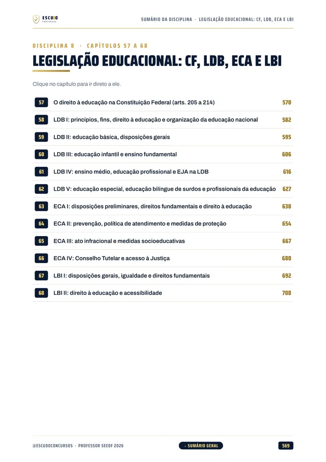
Lei Complementar 840/2011 em 4 capítulos, o regime jurídico dos servidores do DF, e Distrito Federal e RIDE em 6: história, geografia, população, economia e cultura. Mais a Lei Maria da Penha e os Primeiros Socorros na escola, exigidos em toda prova.
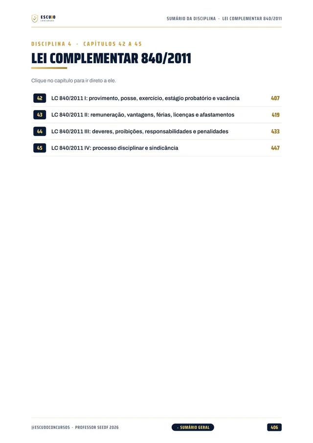
Conhecimentos Pedagógicos em 22 capítulos: função da escola, tendências pedagógicas, didática histórico-cultural, Piaget, Vygotsky e Wallon, planejamento, projeto político-pedagógico, currículo, avaliação, formação docente, TIC, diversidade, educação integral, do campo, ambiental e especial.
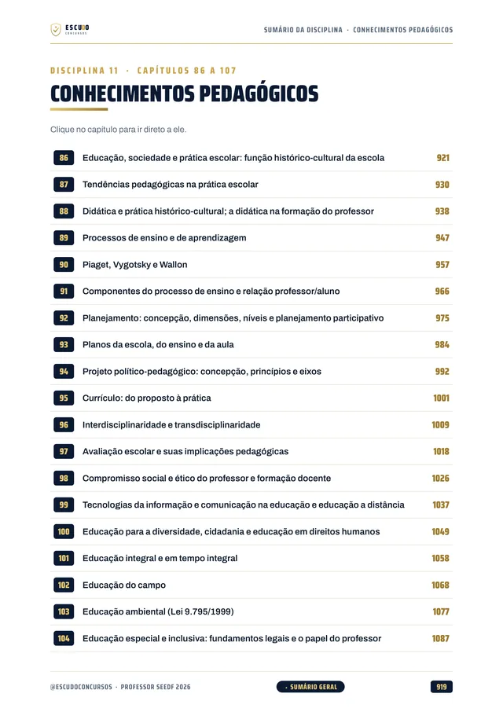
Prova discursiva e Estudo de Caso em 3 capítulos, com o plano de 30 linhas para a dissertação e a resolução do caso prático.
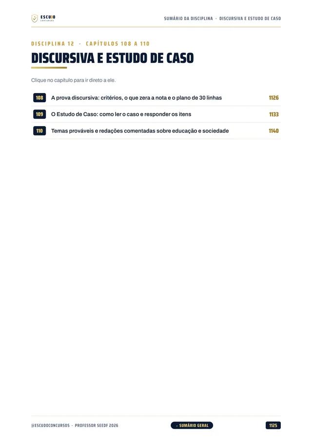
Teoria com recursos para memorizar: mapa de cada capítulo, esquemas, fluxogramas, quadros de "pegadinha" e "não confunda", casos práticos na escola pública do DF e revisão relâmpago no fim de cada capítulo.
2 simulados inéditos de 70 itens Certo ou Errado, no formato da prova da Quadrix, cada um com caderno de itens e gabarito comentado. O Simulado 1 libera 30 dias após a compra e o Simulado 2, 60 dias após.
Navegação clicável: do sumário você vai direto à disciplina e ao capítulo, e volta pelos botões do rodapé.
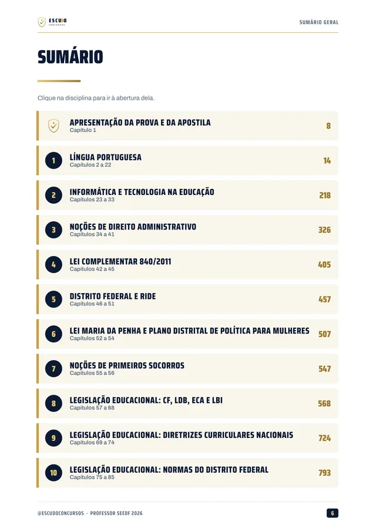
Área de membros
| Módulo | Conteúdo | Liberação |
|---|---|---|
| M0 Comece aqui | Apresentação + capítulo 001 (como é a prova e como usar o curso). Bônus: PDF completo para baixar e imprimir | Na compra; o PDF completo no 8º dia |
| M1 Língua Portuguesa I | Capítulos 002 a 012 | Na compra |
| M2 Língua Portuguesa II | Capítulos 013 a 022 | Na compra |
| M3 Informática e Tecnologia na Educação | Capítulos 023 a 033 | Na compra |
| M4 Direito Administrativo | Capítulos 034 a 041 | Na compra |
| M5 LC 840/2011 | Capítulos 042 a 045 | Na compra |
| M6 Distrito Federal e RIDE | Capítulos 046 a 051 | Na compra |
| M7 Maria da Penha e Primeiros Socorros | Capítulos 052 a 056 | Na compra |
| M8 CF, LDB, ECA e LBI | Capítulos 057 a 068 | Na compra |
| M9 Diretrizes Curriculares Nacionais | Capítulos 069 a 074 | Na compra |
| M10 Normas do Distrito Federal | Capítulos 075 a 085 | Na compra |
| M11 Conhecimentos Pedagógicos I | Capítulos 086 a 097 | Na compra |
| M12 Conhecimentos Pedagógicos II | Capítulos 098 a 107 | Na compra |
| M13 Discursiva e Estudo de Caso | Capítulos 108 a 110 | Na compra |
| M14 Simulado 1 | Caderno de 70 itens Certo ou Errado e gabarito comentado | 30 dias após a compra |
| M15 Simulado 2 | Caderno de 70 itens Certo ou Errado e gabarito comentado | 60 dias após a compra |
Treino no formato da prova
Cada simulado tem 70 itens Certo ou Errado no estilo da Quadrix (30 de Básicos e 40 de Complementares), com caderno de itens e gabarito comentado. Marque o tempo e use a regra da prova: um item errado anula um certo.
Simulado 1
Para medir onde você está e ajustar o estudo antes do edital.
30 dias após a compra
Simulado 2
Para conferir a evolução, com itens novos sobre todo o programa.
60 dias após a compra
Para quem é
Para quem vai prestar o concurso de Professor de Educação Básica da SEEDF, de qualquer área, e quer começar agora pelo programa comum a todas elas.
Você tem 7 dias de garantia pela Hotmart. Se não for o que você esperava, pede o reembolso pela própria Hotmart, dentro do prazo.
Sem surpresa na área de membros
Na compra: todas as disciplinas em PDF, uma por módulo, com a teoria e os itens comentados. É o curso inteiro, para começar a estudar no mesmo dia.
8 dias após a compra: o PDF completo para imprimir. É o mesmo conteúdo dos módulos num arquivo só, liberado depois da garantia de 7 dias.
30 dias após a compra: o Simulado 1, com 70 itens Certo ou Errado e o gabarito comentado.
60 dias após a compra: o Simulado 2, com itens novos e o gabarito comentado.
O PDF completo e os simulados aparecem bloqueados na área de membros até a data deles: não é conteúdo faltando, é a liberação programada.
Dúvidas
Não. É um curso 100% em PDF: teoria, itens comentados, 2 simulados e o PDF completo para ler e resolver.
O acesso é imediato depois da confirmação do pagamento, pela área de membros da Hotmart (web ou app). O PDF completo para baixar e imprimir é liberado no 8º dia.
Vale. O concurso foi autorizado, a banca (Instituto Quadrix) já foi ratificada e a previsão oficial do edital é dezembro de 2026. O grosso da prova (Português, Direito Administrativo, legislação educacional, conhecimentos pedagógicos e a legislação do DF) não depende do edital novo, e o curso já traz a legislação conferida no texto vigente em 07/11/2026. Quando o edital sair, vale o que ele disser.
Serve para a parte comum a todas as áreas: os Conhecimentos Básicos e os Complementares, que somam 70 dos 120 itens da prova. Os 50 itens Específicos de cada área (são 57 programas) não estão neste curso. Se a sua área é Pedagogia, existe o curso Professor Pedagogia SEEDF, só com os Específicos.
Ainda não existe: o edital novo não foi publicado. O curso segue o Termo de Referência 3/2026 e o último edital do cargo (Edital SEE/DF nº 31/2022, Quadrix): Língua Portuguesa, tecnologia na educação, Direito Administrativo, LC 840/2011, Distrito Federal e RIDE, Lei Maria da Penha, primeiros socorros, legislação educacional e conhecimentos pedagógicos, com a discursiva e o Estudo de Caso.
Ainda não há edital novo. O Termo de Referência 3/2026 prevê 120 itens Certo ou Errado, com penalização por erro (um item errado anula um certo): 30 de Conhecimentos Básicos, 40 de Complementares e 50 de Específicos. Há ainda a discursiva (dissertação de até 30 linhas) e o Estudo de Caso, no mesmo dia, e a avaliação de títulos.
Pelo Termo de Referência, sim: a prova tem penalização por erro, e um item errado anula um certo. Deixar em branco vale zero, e o primeiro capítulo do curso explica quando isso compensa. A regra exata será conferida no edital.
Não. Os 1.060 itens de treino são inéditos, escritos no estilo Certo ou Errado da Quadrix a partir do programa.
Sim. São 3 capítulos (108 a 110) sobre a dissertação de até 30 linhas e o Estudo de Caso, com o plano de escrita.
Tem dois, inéditos, com 70 itens Certo ou Errado cada no estilo da Quadrix e gabarito comentado: o Simulado 1 libera 30 dias após a compra e o Simulado 2, 60 dias após.
Você tem 7 dias de garantia pela Hotmart. Se não for o que você esperava, pede o reembolso.
SEEDF 2026 · Professor de Educação Básica
de R$ 47 por 21% OFF
R$37
com o cupom SEEDF37 até 31/12/2026.
R$47
Curso completo, com acesso imediato.
Material para o SEU edital. ESCUDO Concursos.
Continue estudando
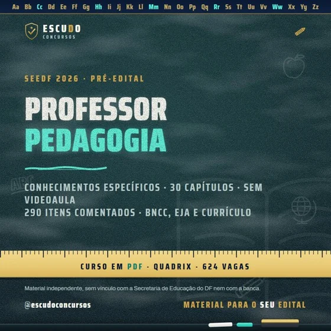
SEEDF 2026 · Pré-editalProfessor Pedagogia da SEEDF: Específicos SEMED Porto Velho/RO 2026 · IBGPProfessor Séries Iniciais de Porto Velho
SEMED Porto Velho/RO 2026 · IBGPProfessor Séries Iniciais de Porto Velho Aparecida de Goiânia 2026 · Instituto Verbena/UFGAgente Educativo de Aparecida de Goiânia
Aparecida de Goiânia 2026 · Instituto Verbena/UFGAgente Educativo de Aparecida de Goiânia Aparecida de Goiânia 2026 · Instituto Verbena/UFGProfessor PE-I Pedagogia de Aparecida de Goiânia
Aparecida de Goiânia 2026 · Instituto Verbena/UFGProfessor PE-I Pedagogia de Aparecida de GoiâniaVer todos: concursos de educação · Concursos no Distrito Federal